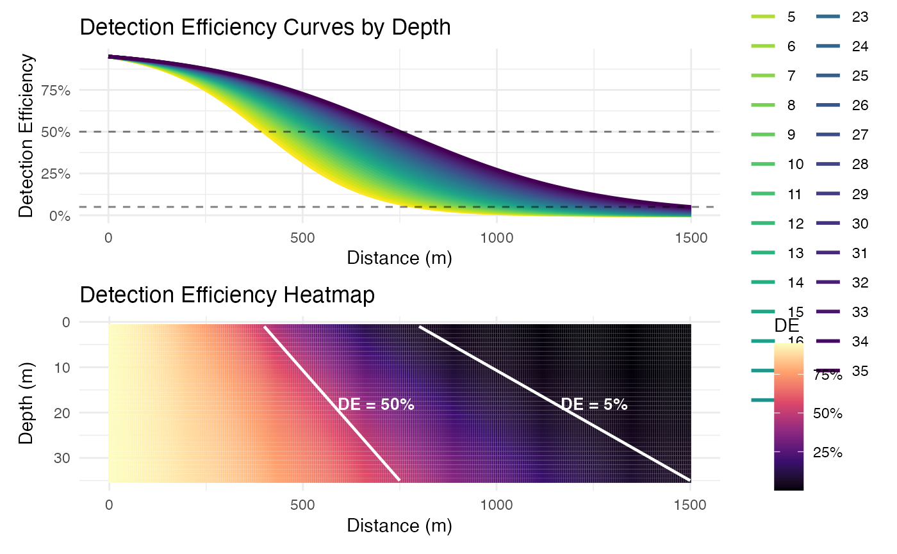
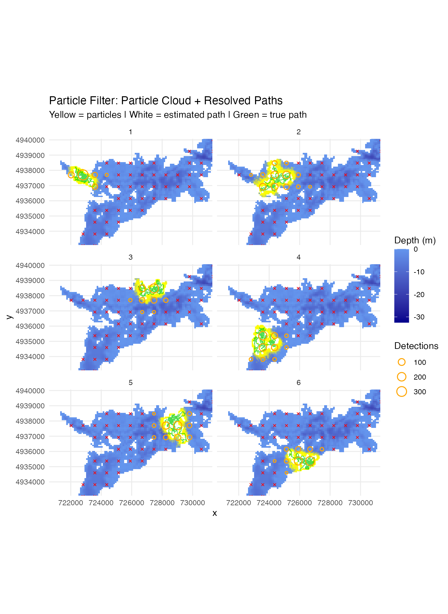
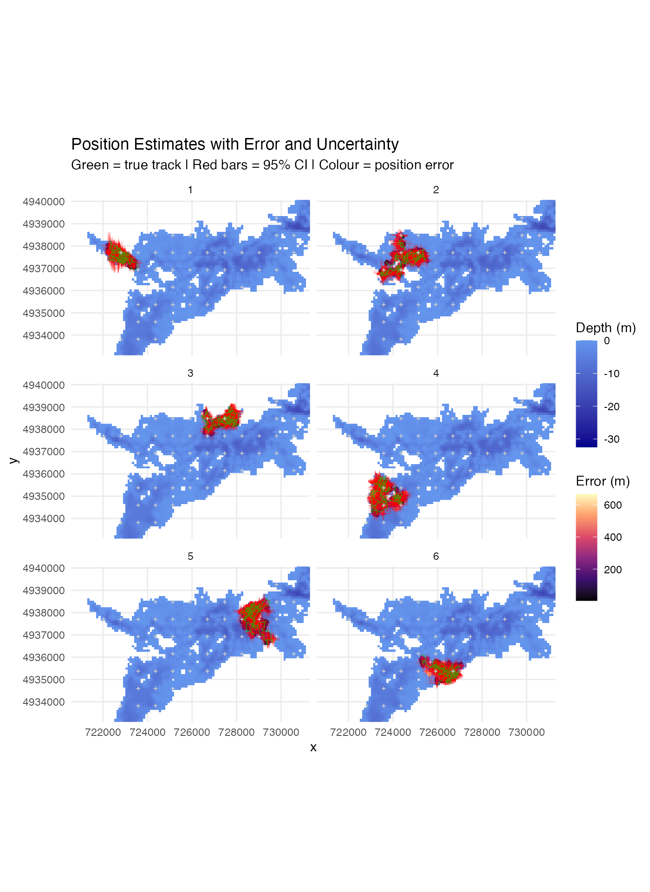
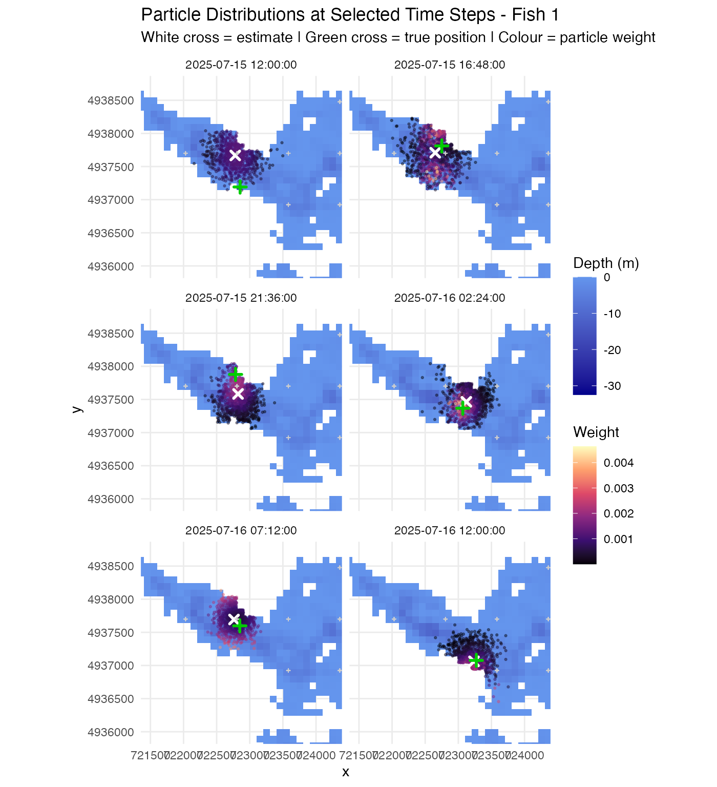
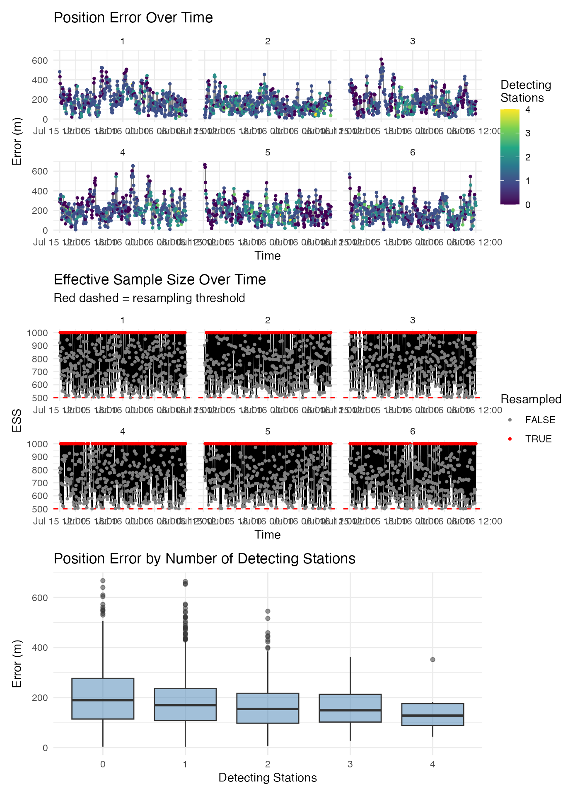
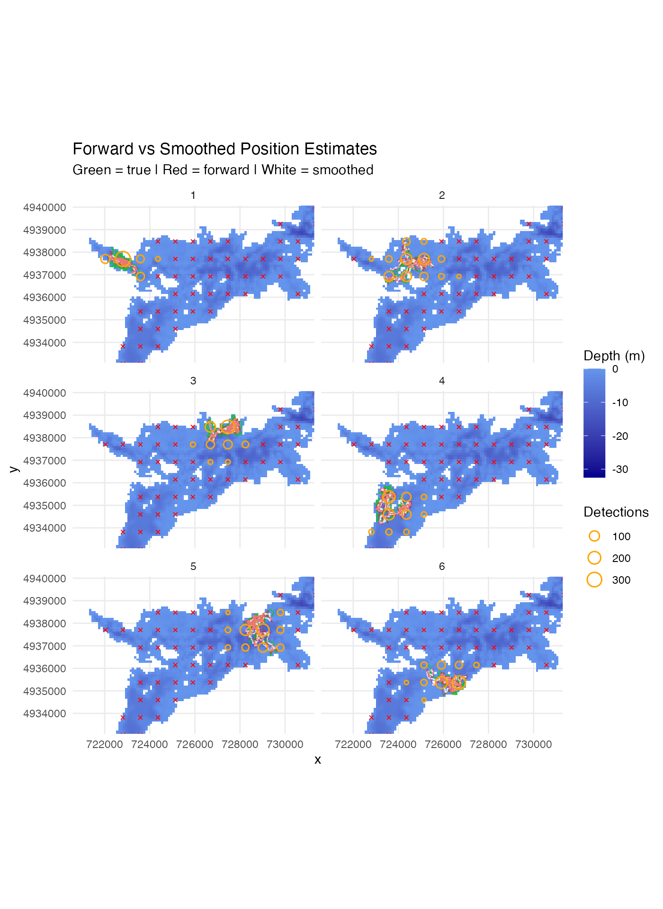
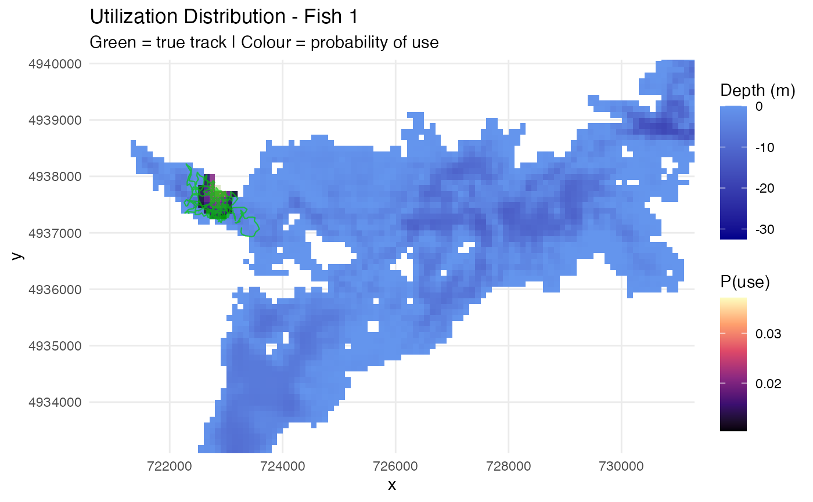
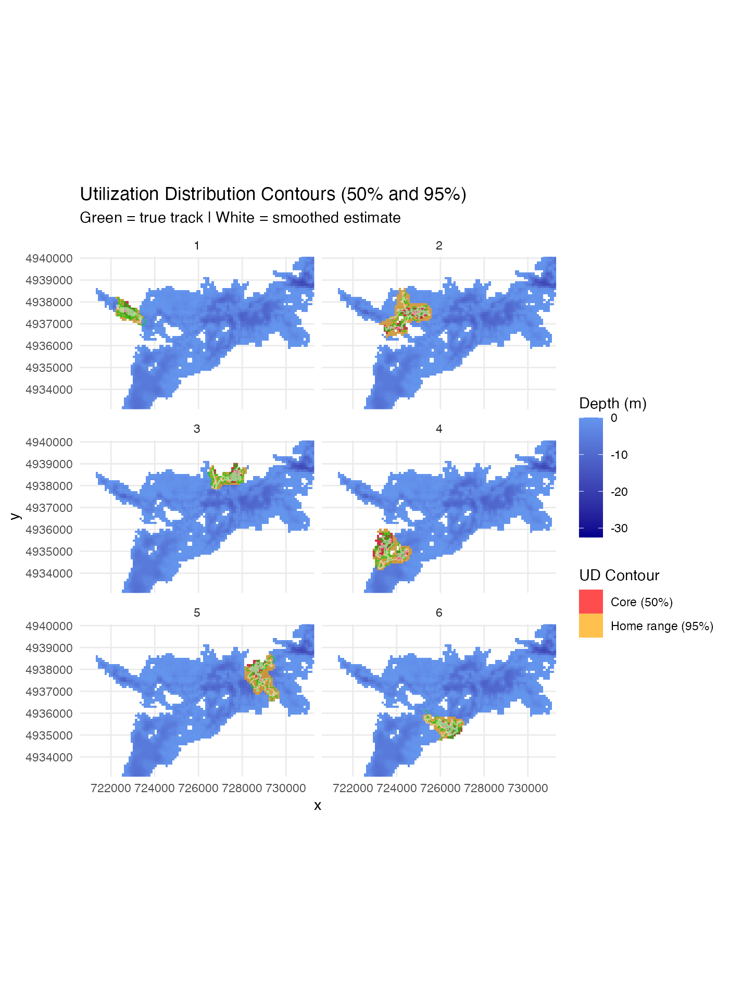
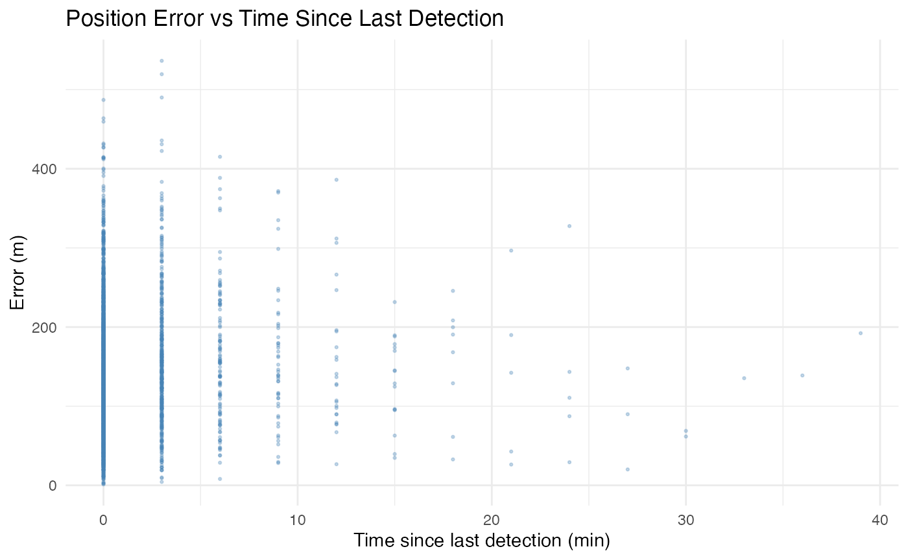
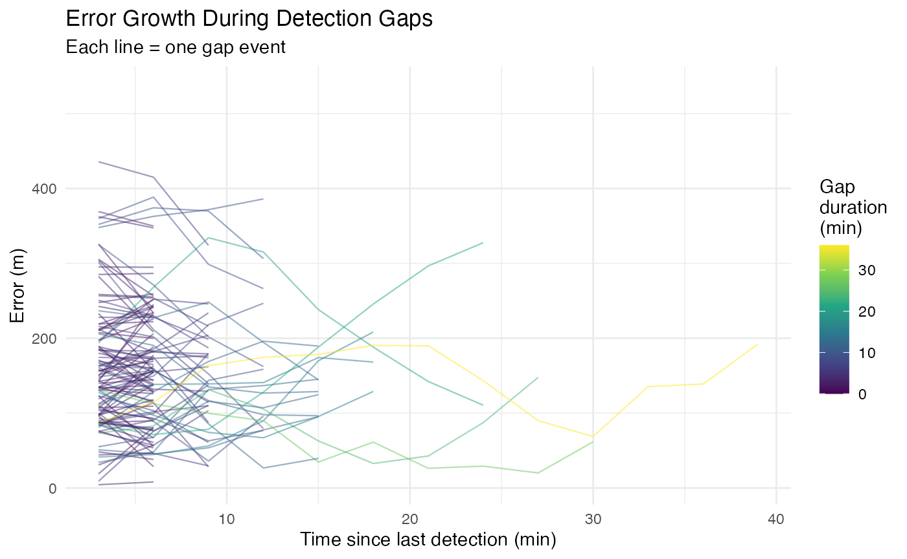

Particle Filter Positioning for Acoustic Telemetry
Sequential Monte Carlo positioning with movement path estimation
Jake Brownscombe
2026-03-20
Source:vignettes/Particle_Filter_Simulation.Rmd
Particle_Filter_Simulation.RmdAnalysis Overview
This tutorial demonstrates particle filter positioning for acoustic telemetry using the positionR package. The particle filter estimates continuous movement paths by propagating a cloud of possible fish locations forward in time, weighting them by detection likelihood at each time step. This approach complements the WADE grid-based method by producing fine-scale path estimates with uncertainty quantification. The tutorial covers the forward filter, two-filter smoother, utilisation distributions, home range estimation, and detection gap analysis.
Environment Setup
Receiver Array
points_regular <- generate_exact_regular_points(depth_raster, n_points = 80, seed = 123)Station Distances
station_distances <- calculate_station_distances(
raster = depth_raster,
receiver_frame = points_regular,
max_distance = 30000,
station_col = "station_id"
)## Distance calculations complete!
## Result contains 366168 station-cell combinations
## Station IDs ( integer ): 1, 2, 3, 4, 5 ...Detection Efficiency Model
logistic_DE <- create_logistic_curve_depth(
min_depth = 1, max_depth = 35,
d50_min_depth = 400, d95_min_depth = 800,
d50_max_depth = 750, d95_max_depth = 1500,
plot = TRUE, return_model = TRUE, return_object = TRUE
)
##
## Call:
## stats::glm(formula = DE ~ dist_m * depth_m, family = stats::binomial(link = "logit"),
## data = predictions)
##
## Deviance Residuals:
## Min 1Q Median 3Q Max
## -0.124692 -0.019879 0.006263 0.023533 0.050386
##
## Coefficients:
## Estimate Std. Error z value Pr(>|z|)
## (Intercept) 2.825e+00 1.331e-01 21.228 <2e-16 ***
## dist_m -6.738e-03 2.256e-04 -29.871 <2e-16 ***
## depth_m 5.807e-03 6.209e-03 0.935 0.35
## dist_m:depth_m 8.277e-05 9.398e-06 8.807 <2e-16 ***
## ---
## Signif. codes: 0 '***' 0.001 '**' 0.01 '*' 0.05 '.' 0.1 ' ' 1
##
## (Dispersion parameter for binomial family taken to be 1)
##
## Null deviance: 6031.202 on 10534 degrees of freedom
## Residual deviance: 11.686 on 10531 degrees of freedom
## AIC: 4332.3
##
## Number of Fisher Scoring iterations: 6Simulate Fish Tracks
start_time <- as.POSIXct("2025-07-15 12:00:00", tz = "UTC")
fish_simulation <- simulate_fish_tracks(
raster = depth_raster,
station_distances = station_distances,
n_paths = 6,
n_steps = 480,
step_length_mean = 50,
step_length_sd = 30,
time_step = 180,
seed = 42,
start_time = start_time,
include_barriers = TRUE
)## Barrier masking enabled: DE will be set to 0 where crosses_barrier = TRUE
## Preprocessing spatial lookup table...
## Generating path 1 of 6
## Generating path 2 of 6
## Generating path 3 of 6
## Generating path 4 of 6
## Generating path 5 of 6
## Generating path 6 of 6
## Simulation complete!
## Start time: 2025-07-15 12:00:00 UTC
## End time: 2025-07-16 12:00:00 UTCForward Particle Filter
The particle filter propagates a cloud of particles (possible fish locations) forward in time using a Correlated Random Walk, then weights each particle by how well it explains the observed detections and non-detections.
pf_results <- particle_filter_positioning(
detection_data = fish_simulation$station_detections,
station_info = points_regular,
de_model = logistic_DE$log_model,
raster = depth_raster,
n_particles = 1000,
step_length_mean = 50,
step_length_sd = 30,
turning_angle_sd = 45,
time_step = 180,
max_distance = 30000,
fish_id_col = "path_id",
time_col = "datetime",
station_col = "station_id",
position_method = "mean",
return_particles = TRUE,
verbose = TRUE
)## DE lookup grid pre-computed ( 2000 x 100 bins)
## Particle filter complete for 6 fish.Compare with Ground Truth
true_tracks <- fish_simulation$tracks %>%
rename(fish_id = path_id, time = datetime, x_true = x, y_true = y) %>%
select(fish_id, time, x_true, y_true)
comparison <- pf_results$positions %>%
left_join(true_tracks, by = c("fish_id", "time")) %>%
filter(!is.na(x_true)) %>%
mutate(error_m = sqrt((x_mean - x_true)^2 + (y_mean - y_true)^2))
cat("Mean error:", round(mean(comparison$error_m, na.rm = TRUE), 1), "m\n")## Mean error: 184.3 m## Median error: 170.1 m## 95th percentile: 368.6 m
comparison %>%
group_by(fish_id) %>%
summarise(mean_error = mean(error_m, na.rm = TRUE),
median_error = median(error_m, na.rm = TRUE),
n_steps = n(), .groups = "drop")## # A tibble: 6 x 4
## fish_id mean_error median_error n_steps
## <int> <dbl> <dbl> <int>
## 1 1 202. 189. 481
## 2 2 151. 140. 481
## 3 3 175. 158. 481
## 4 4 214. 202. 481
## 5 5 186. 175. 476
## 6 6 179. 166. 481Visualization
Particle Cloud and Resolved Paths
pf_times <- unique(pf_results$particles$time)
sampled_times <- pf_times[seq(1, length(pf_times), by = 10)]
particles_sub <- pf_results$particles %>%
filter(time %in% sampled_times) %>%
group_by(fish_id, time) %>%
slice_sample(n = 500) %>%
ungroup()
ggplot() +
geom_raster(data = raster_df, aes(x = x, y = y, fill = layer)) +
scale_fill_gradient(low = "blue4", high = "cornflowerblue",
na.value = "transparent", name = "Depth (m)") +
geom_point(data = particles_sub, aes(x = x, y = y),
colour = "yellow", alpha = 0.1, size = 0.3) +
geom_path(data = comparison, aes(x = x_mean, y = y_mean),
colour = "white", linewidth = 0.5, alpha = 0.8) +
geom_point(data = comparison, aes(x = x_mean, y = y_mean),
colour = "white", size = 0.5, alpha = 0.6) +
geom_path(data = comparison, aes(x = x_true, y = y_true),
colour = "green3", linewidth = 0.4, alpha = 0.7) +
geom_point(data = stations_plot %>% filter(!has_detections),
aes(x = station_x, y = station_y),
colour = "red", size = 1, shape = 4) +
geom_point(data = stations_plot %>% filter(has_detections),
aes(x = station_x, y = station_y, size = total_dets),
colour = "orange", fill = NA, shape = 21, stroke = 0.8) +
scale_size_continuous(range = c(1, 5), name = "Detections") +
facet_wrap(~fish_id, ncol = 2) +
coord_sf(xlim = zoom_xlim, ylim = zoom_ylim) +
theme_minimal() +
labs(title = "Particle Filter: Particle Cloud + Resolved Paths",
subtitle = "Yellow = particles | White = estimated path | Green = true path")
Position Error and Uncertainty
ggplot() +
geom_raster(data = raster_df, aes(x = x, y = y, fill = layer)) +
scale_fill_gradient(low = "blue4", high = "cornflowerblue",
na.value = "transparent", name = "Depth (m)") +
geom_point(data = comparison, aes(x = x_mean, y = y_mean, colour = error_m), size = 1) +
scale_colour_viridis_c(option = "magma", name = "Error (m)") +
geom_segment(data = comparison,
aes(x = x_mean - 2*x_sd, xend = x_mean + 2*x_sd,
y = y_mean, yend = y_mean),
colour = "red", alpha = 0.3, linewidth = 0.2) +
geom_segment(data = comparison,
aes(x = x_mean, xend = x_mean,
y = y_mean - 2*y_sd, yend = y_mean + 2*y_sd),
colour = "red", alpha = 0.3, linewidth = 0.2) +
geom_path(data = comparison, aes(x = x_true, y = y_true),
colour = "green3", linewidth = 0.3, alpha = 0.6) +
geom_point(data = stations_plot, aes(x = station_x, y = station_y),
colour = "grey80", size = 0.5, shape = 3) +
facet_wrap(~fish_id, ncol = 2) +
coord_sf(xlim = zoom_xlim, ylim = zoom_ylim) +
theme_minimal() +
labs(title = "Position Estimates with Error and Uncertainty",
subtitle = "Green = true track | Red bars = 95% CI | Colour = position error")
Particle Distributions at Selected Time Steps
fish1_times <- comparison %>%
filter(fish_id == comparison$fish_id[1]) %>% arrange(time)
time_idx <- round(seq(1, nrow(fish1_times), length.out = 6))
selected_times <- fish1_times$time[time_idx]
particles_snapshot <- pf_results$particles %>%
filter(fish_id == comparison$fish_id[1], time %in% selected_times)
positions_snapshot <- comparison %>%
filter(fish_id == comparison$fish_id[1], time %in% selected_times)
ggplot() +
geom_raster(data = raster_df, aes(x = x, y = y, fill = layer)) +
scale_fill_gradient(low = "blue4", high = "cornflowerblue",
na.value = "transparent", name = "Depth (m)") +
geom_point(data = particles_snapshot,
aes(x = x, y = y, colour = weight), size = 0.5, alpha = 0.4) +
scale_colour_viridis_c(option = "magma", name = "Weight") +
geom_point(data = positions_snapshot, aes(x = x_mean, y = y_mean),
colour = "white", size = 2, shape = 4, stroke = 1.5) +
geom_point(data = positions_snapshot, aes(x = x_true, y = y_true),
colour = "green3", size = 2, shape = 3, stroke = 1.5) +
geom_point(data = stations_plot, aes(x = station_x, y = station_y),
colour = "grey80", size = 0.5, shape = 3) +
facet_wrap(~time, ncol = 2) +
coord_sf(xlim = range(c(particles_snapshot$x, positions_snapshot$x_mean), na.rm = TRUE) + c(-500, 500),
ylim = range(c(particles_snapshot$y, positions_snapshot$y_mean), na.rm = TRUE) + c(-500, 500)) +
theme_minimal() +
labs(title = paste("Particle Distributions at Selected Time Steps - Fish", comparison$fish_id[1]),
subtitle = "White cross = estimate | Green cross = true position | Colour = particle weight")
Error and ESS Diagnostics
ggplot(comparison, aes(x = time, y = error_m)) +
geom_line(alpha = 0.5) +
geom_point(aes(colour = n_detecting), size = 0.8) +
scale_colour_viridis_c(name = "Detecting\nStations") +
facet_wrap(~fish_id, scales = "free_x") +
theme_minimal() +
labs(title = "Position Error Over Time", x = "Time", y = "Error (m)") +
ggplot(comparison, aes(x = time, y = ess)) +
geom_line() +
geom_hline(yintercept = 1000 * 0.5, linetype = "dashed", colour = "red") +
geom_point(aes(colour = resampled), size = 0.8) +
scale_colour_manual(values = c("FALSE" = "grey50", "TRUE" = "red"), name = "Resampled") +
facet_wrap(~fish_id, scales = "free_x") +
theme_minimal() +
labs(title = "Effective Sample Size Over Time",
subtitle = "Red dashed = resampling threshold", x = "Time", y = "ESS") +
ggplot(comparison, aes(x = factor(n_detecting), y = error_m)) +
geom_boxplot(fill = "steelblue", alpha = 0.5) +
theme_minimal() +
labs(title = "Position Error by Number of Detecting Stations",
x = "Detecting Stations", y = "Error (m)") +
plot_layout(ncol = 1)
Two-Filter Smoother
The two-filter smoother runs a backward filter from the last time step to the first, then combines forward and backward particle weights at each time step. This incorporates both past and future observations, producing more accurate position estimates.
smooth_results <- pf_smooth(
pf_results = pf_results,
detection_data = fish_simulation$station_detections,
station_info = points_regular,
de_model = logistic_DE$log_model,
raster = depth_raster,
step_length_mean = 50, step_length_sd = 30,
turning_angle_sd = 45, time_step = 180,
max_distance = 30000,
fish_id_col = "path_id", time_col = "datetime", station_col = "station_id",
position_method = "mean",
return_particles = TRUE,
verbose = TRUE
)## Smoothing complete for 6 fish.
smooth_comparison <- smooth_results$positions %>%
left_join(true_tracks, by = c("fish_id", "time")) %>%
filter(!is.na(x_true)) %>%
mutate(error_m = sqrt((x_mean - x_true)^2 + (y_mean - y_true)^2))
cat("Forward - mean:", round(mean(comparison$error_m, na.rm = TRUE), 1),
"m, median:", round(median(comparison$error_m, na.rm = TRUE), 1), "m\n")## Forward - mean: 184.3 m, median: 170.1 m
cat("Smoothed - mean:", round(mean(smooth_comparison$error_m, na.rm = TRUE), 1),
"m, median:", round(median(smooth_comparison$error_m, na.rm = TRUE), 1), "m\n")## Smoothed - mean: 145.3 m, median: 136.5 m
cat("Improvement:", round((1 - mean(smooth_comparison$error_m, na.rm = TRUE) /
mean(comparison$error_m, na.rm = TRUE)) * 100, 1), "%\n")## Improvement: 21.2 %Forward vs Smoothed Comparison
ggplot() +
geom_raster(data = raster_df, aes(x = x, y = y, fill = layer)) +
scale_fill_gradient(low = "blue4", high = "cornflowerblue",
na.value = "transparent", name = "Depth (m)") +
geom_path(data = comparison, aes(x = x_true, y = y_true),
colour = "green3", linewidth = 0.4, alpha = 0.7) +
geom_path(data = smooth_comparison, aes(x = x_mean, y = y_mean),
colour = "white", linewidth = 0.5, alpha = 0.8) +
geom_path(data = comparison, aes(x = x_mean, y = y_mean),
colour = "red", linewidth = 0.3, alpha = 0.5) +
geom_point(data = stations_plot %>% filter(!has_detections),
aes(x = station_x, y = station_y),
colour = "red", size = 1, shape = 4) +
geom_point(data = stations_plot %>% filter(has_detections),
aes(x = station_x, y = station_y, size = total_dets),
colour = "orange", fill = NA, shape = 21, stroke = 0.8) +
scale_size_continuous(range = c(1, 5), name = "Detections") +
facet_wrap(~fish_id, ncol = 2) +
coord_sf(xlim = zoom_xlim, ylim = zoom_ylim) +
theme_minimal() +
labs(title = "Forward vs Smoothed Position Estimates",
subtitle = "Green = true | Red = forward | White = smoothed")
Utilization Distributions
Convert particle clouds into probability-of-use surfaces and extract home range contours.
ud_results <- pf_utilization_distribution(
pf_results = smooth_results,
raster = depth_raster,
contour_levels = c(0.5, 0.95),
by_time = FALSE,
verbose = TRUE
)## Computing UD for fish 1## Computing UD for fish 2## Computing UD for fish 3## Computing UD for fish 4## Computing UD for fish 5## Computing UD for fish 6
ud_results$home_ranges## fish_id time contour_level area_m2 area_ha
## 1 1 NA 0.50 260000 26
## 2 1 NA 0.95 910000 91
## 3 2 NA 0.50 760000 76
## 4 2 NA 0.95 2490000 249
## 5 3 NA 0.50 390000 39
## 6 3 NA 0.95 1210000 121
## 7 4 NA 0.50 750000 75
## 8 4 NA 0.95 2060000 206
## 9 5 NA 0.50 450000 45
## 10 5 NA 0.95 1990000 199
## 11 6 NA 0.50 400000 40
## 12 6 NA 0.95 1340000 134UD Heatmap
first_fish_id <- as.character(unique(smooth_results$positions$fish_id)[1])
ud_raster_1 <- ud_results$ud_rasters[[first_fish_id]]
ud_df <- as.data.frame(ud_raster_1, xy = TRUE)
names(ud_df)[3] <- "prob"
ggplot() +
geom_raster(data = raster_df, aes(x = x, y = y, fill = layer)) +
scale_fill_gradient(low = "blue4", high = "cornflowerblue",
na.value = "transparent", name = "Depth (m)") +
new_scale_fill() +
geom_raster(data = ud_df %>% filter(!is.na(prob) & prob > 0.01),
aes(x = x, y = y, fill = prob), alpha = 0.8) +
scale_fill_viridis_c(option = "magma", name = "P(use)") +
geom_path(data = comparison %>% filter(fish_id == as.integer(first_fish_id)),
aes(x = x_true, y = y_true),
colour = "green3", linewidth = 0.4, alpha = 0.7) +
coord_sf(xlim = zoom_xlim, ylim = zoom_ylim) +
theme_minimal() +
labs(title = paste("Utilization Distribution - Fish", first_fish_id),
subtitle = "Green = true track | Colour = probability of use")
50% and 95% Home Range Contours
ud_contour_list <- list()
for (fid in names(ud_results$ud_rasters)) {
ud_r <- ud_results$ud_rasters[[fid]]
ud_vals <- as.data.frame(ud_r, xy = TRUE)
names(ud_vals)[3] <- "prob"
ud_vals <- ud_vals %>% filter(!is.na(prob) & prob > 0) %>%
arrange(desc(prob)) %>%
mutate(cum_prob = cumsum(prob),
contour = case_when(
cum_prob <= 0.50 ~ "Core (50%)",
cum_prob <= 0.95 ~ "Home range (95%)",
TRUE ~ NA_character_),
fish_id = as.integer(fid))
ud_contour_list[[fid]] <- ud_vals %>% filter(!is.na(contour))
}
ud_contours_df <- do.call(rbind, ud_contour_list)
ggplot() +
geom_raster(data = raster_df, aes(x = x, y = y, fill = layer)) +
scale_fill_gradient(low = "blue4", high = "cornflowerblue",
na.value = "transparent", name = "Depth (m)") +
new_scale_fill() +
geom_raster(data = ud_contours_df,
aes(x = x, y = y, fill = contour), alpha = 0.7) +
scale_fill_manual(values = c("Core (50%)" = "red", "Home range (95%)" = "orange"),
name = "UD Contour") +
geom_path(data = comparison, aes(x = x_true, y = y_true),
colour = "green3", linewidth = 0.3, alpha = 0.7) +
geom_path(data = smooth_comparison, aes(x = x_mean, y = y_mean),
colour = "white", linewidth = 0.3, alpha = 0.5) +
facet_wrap(~fish_id, ncol = 2) +
coord_sf(xlim = zoom_xlim, ylim = zoom_ylim) +
theme_minimal() +
labs(title = "Utilization Distribution Contours (50% and 95%)",
subtitle = "Green = true track | White = smoothed estimate")
Detection Gap Analysis
Analyse how position error accumulates during periods without detections.
gap_results <- pf_analyze_gaps(
pf_results = smooth_results,
true_tracks = fish_simulation$tracks %>%
rename(fish_id = path_id, time = datetime, x_true = x, y_true = y) %>%
select(fish_id, time, x_true, y_true)
)
cat("Total gaps identified:", nrow(gap_results$gaps), "\n")## Total gaps identified: 417
if (nrow(gap_results$gaps) > 0) {
cat("Gap duration range:",
round(min(gap_results$gaps$gap_duration_min), 1), "-",
round(max(gap_results$gaps$gap_duration_min), 1), "min\n")
cat("Mean max error during gaps:",
round(mean(gap_results$gaps$max_error_in_gap, na.rm = TRUE), 1), "m\n")
}## Gap duration range: 0 - 36 min
## Mean max error during gaps: 166.2 mError vs Time Since Last Detection
ts <- gap_results$time_series
ggplot(ts, aes(x = time_since_last_detection_sec / 60, y = error_m)) +
geom_point(alpha = 0.3, size = 0.5, colour = "steelblue") +
geom_smooth(method = "loess", colour = "red", se = TRUE, linewidth = 0.8) +
theme_minimal() +
labs(title = "Position Error vs Time Since Last Detection",
x = "Time since last detection (min)", y = "Error (m)")
Error Growth During Gaps
if (nrow(gap_results$gaps) > 0) {
gap_ts <- ts %>% filter(!is.na(gap_id)) %>%
left_join(gap_results$gaps %>% select(gap_id, gap_duration_min), by = "gap_id")
ggplot(gap_ts, aes(x = time_since_last_detection_sec / 60,
y = error_m, group = gap_id,
colour = gap_duration_min)) +
geom_line(alpha = 0.5, linewidth = 0.4) +
scale_colour_viridis_c(name = "Gap\nduration\n(min)") +
theme_minimal() +
labs(title = "Error Growth During Detection Gaps",
subtitle = "Each line = one gap event",
x = "Time since last detection (min)", y = "Error (m)")
}
Benchmark
cat("Particle count scaling:\n")## Particle count scaling:
for (np in c(100, 500, 1000, 2000)) {
t <- system.time({
particle_filter_positioning(
detection_data = fish_simulation$station_detections,
station_info = points_regular,
de_model = logistic_DE$log_model,
raster = depth_raster,
n_particles = np,
step_length_mean = 50, step_length_sd = 30,
turning_angle_sd = 45, time_step = 180,
max_distance = 30000,
fish_id_col = "path_id", time_col = "datetime",
station_col = "station_id",
position_method = "mean",
verbose = FALSE
)
})
cat(sprintf(" %4d particles: %.1f s\n", np, t["elapsed"]))
}## 100 particles: 2.9 s
## 500 particles: 5.7 s
## 1000 particles: 8.8 s
## 2000 particles: 15.4 s